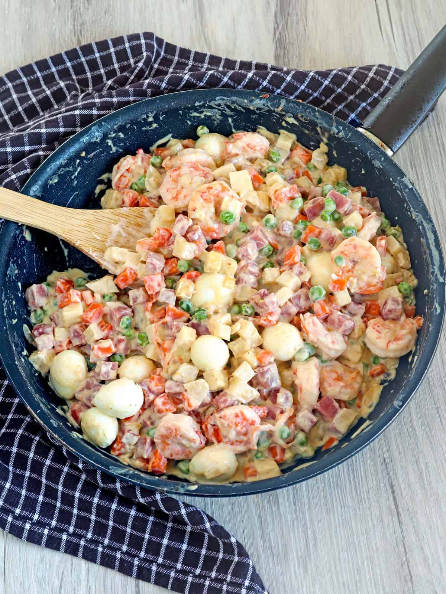

Sipo Egg

Ingredients:
- 2 dozens of Quail Eggs
- 500ml of All-purpose Cream
- 2 cups of Mixed Vegetables
- 1/4 cup of Butter
How to cook:
- Boil all Quail Eggs then peel
- Put Butter in the pan and stir-fry Mixed Vegetables
- Mix the All-purpose Cream
- If the veggies are soft, Mix Quail Eggs
- Plate and Enjoy!